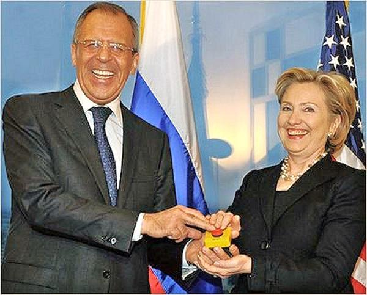
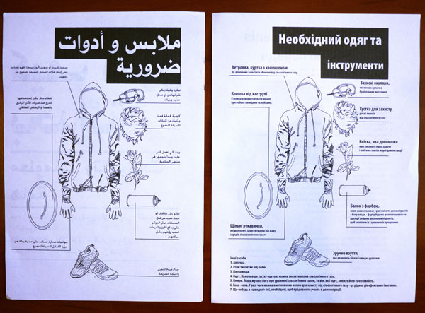
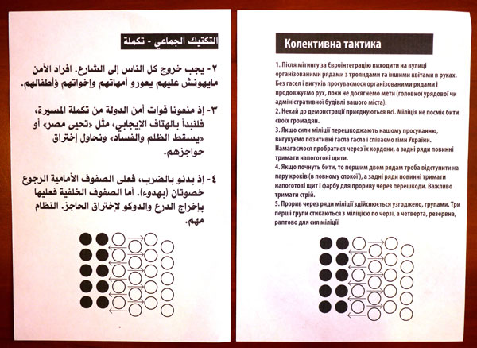
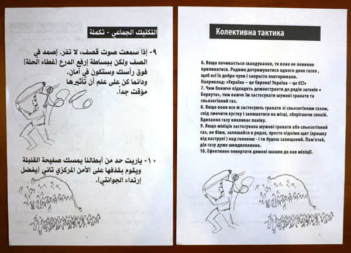
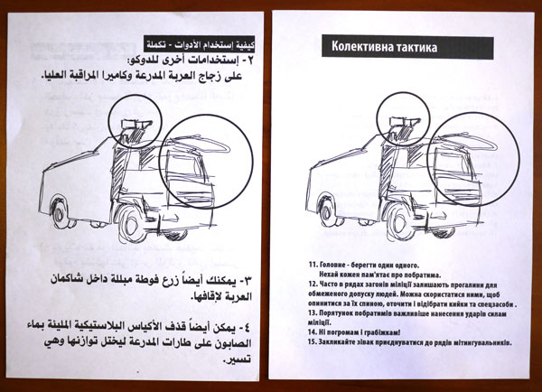
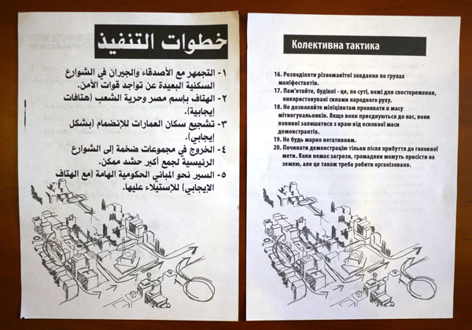

2014-09-18 21:52:00
我在前文《美國的東亞戦略史》曾提及今日的美國在阿富汗和伊拉克浪費了至少三萬億美金之後，國力衰竭，亟须進行戦略收縮，休養生息。過去這年烏克蘭發生動亂，是美國進入全球戦略收縮期之後，第一個重要的國際危機。在烏克蘭總統波洛申科賦于叛軍三年自治權後，此危機已經暫時告一段落。現在我們可以作一回顧，反省一下各個參與國的政略與戦略決策和得失。尤其美國仍是全球霸主，台灣的幕後老板，美國的政略戦略思想對國運會有極大的切身影響，不可不察。
最近一輪的烏克蘭動亂始自2013年十一月，但其種子在1990年的秋天就已經埋下了。當時戈巴契夫相信了美國的“正義”和“善意”，決定自毁蘇聯在東歐的勢力範圍。美蘇雙方進行了幾個月的秘密談判，焦點在於是否讓西德兼並東德。原本蘇方的條件是北約（NATO，North Atlantic Treaty Organization）的部隊不能駐入原東德境内，但是如同許多其他的争議，最後是戈巴契夫做了單方的讓步，同意統一的德國可以加入北約；而老布希總統同意的交換條件則是北約止於東德，不再向東擴張。
很不幸的是，美國政界自1970年代開始的衰退和腐敗（如美國的Lobbying Industry，亦即大公司可以合法公開地收買議員，就是始自尼克森時代的法案），随着冷戦的結束而加速，老布希竟成了美國最後一個在政略戦略上有些遠見的總統。他在國際政策上的諸般決策被迅速惡質化的美國政壇和輿論界批評得一文不值，連競選連任都失敗了。不但他在海灣戦争後保留胡笙政權的決定一直到2004年美軍在伊拉克戦争中陷入泥淖才獲得大眾的理解，他在1990年和戈巴契夫簽的密約也很快被克林顿片面撕毁，只是其後果到今日才開始明顯化。
美國的世界霸權原本是在冷戦背景下的必要反應，一旦蘇聯的威脅不再，霸權的存在對世界和美國都不是一件好事。没有外來的威脅，霸權成為美國内部腐敗勢力（尤其是金融業，過去三十年來世界上的金融危機基本都是美國造成的，我會另寫一篇文章詳述）從海外榨取利益的手段，而這些不勞而獲的利益又促成了美國社會、政治和經濟的進一步腐化的動力。我在前文《美國的東亞戦略史》已經解釋過美國自19世纪中期以來一直是追求霸權的，但在冷戦結束後追求霸權不再是為美國（更别提世界）的安全服務，維持並擴張霸權反過來成為美國外交政策的終極目標，而且已經成為一種反射性動作，即使在次要方向並與長遠利益背道而馳的地方，美國都控制不住自己的貪婪，2008年的金融危機是一個例子，烏克蘭更是一個絶佳的例子。
在1990年代蘇聯分崩離析，繼任的俄羅斯總統葉爾辛承續戈巴契夫對美國的幻想，大舉起用美國顧問，對經濟進行“休克療法”，其結果是經濟完全崩盤，國家財富被美國顧問、美國公司和他們的俄國代理人掠奪殆盡。十年之内，俄國從原本與美國比肩的超强一路跌落到第三世界，自顧不暇，根本就没有餘力來和美國討公道。於是在1999年三月，克林顿以南斯拉夫内戦為藉口，決定片面撕毁密約，把原本属於華沙公約的波蘭，捷克和匈牙利納入北約。北約原本是冷戦時期保護西歐的主要組織，蘇聯瓦解之後應該就不再有意義，但是美國發現由於它自己主導北約，因此可以借此鉗制歐洲列强。尤其是德法两國在德國統一之後更進一步整合歐洲大陸，準備成立歐元區，成為美國霸權的潜在挑戦者，更須要牢牢看管。所以將北約擴展到對美國頂禮膜拜、唯命是從而對德法有歷史反感的東歐諸國，可謂一舉三得：既有了管控東歐國家的正式管道，也對俄國的國際圈子趁火打劫，但最重要的是讓德法两國在軍事和外交上完全没有了翻身的餘地。這就是我早先提到的，維持並擴張霸權已經成為美國外交政策的終極目標；而美國近年來在外交上特别喜歡玩小聰明的把戲，這也是例子之一。
在1999年當時，普丁是葉爾辛手下國家安全委員會的委員。而俄國國力衰弱至極，實在無心再管那些與俄國没有接壤的東歐國家，何況克林顿的主要目標是德法，俄國更懒得管，所以連密約被片面撕毁都没有做任何抗議。1999年底葉爾辛忽然辭職時，普丁已經升任總理，於是依憲法繼任俄羅斯總統。剛好美國也很快換了新總統，普丁承續葉爾辛的親美政策，使進混身解數拉攏取悦於小布希，以致小布希在2001年六月說出“I looked the man in the eyes...I was able to get a sense of his soul.”的名句。不過當時小布希已經準備將北約繼續東擴，普丁私下拿出1990年的密約來抗議；俄國那麼弱，小布希當然不用理會他。同年九月11日，紐約恐襲（我當天原本要到世貿中心頂樓開研習會，後因另一個會而逃過一劫，一位瑞聯銀的同事則没這麼幸運），美國出兵阿富汗，普丁給予全力協助。美國於次年以“邪惡軸心”（“Axis of Evil”，即北韓，伊朗和伊拉克）為藉口，片面撕毁反弹道飛弹條約（Anti-Ballistic Missile Treaty）；其實吃虧的當然還是俄國，但是普丁也只能打落牙歯和血吞。2003年初美英用假造的證據為藉口出兵伊拉克，普丁雖然心知肚明，仍然不敢開口頂撞。
美國中情局（CIA，Central Intelligence Agency）在冷戦的四十幾年裡策劃了全球各地四十幾個政變（詳見“Overthrowing Other Peoples Governments”），以打撃任何不親美的政權。在冷戦結束後，這些任務並没有取消，各式直接或間接的宣傳管道仍然持續，地下代理人仍然被鼓勵以各種合法和非法的手段來奪取政權。其典型的模式是將一般政治與社會的缺點和弊端全部歸咎於任何不同於英美的制度，而常用的手段則是以資金和媒體來支持挑動族羣間的鬥争。2003年底，Georgia（英文翻為喬治亞，其實依其自己語言的發音應該翻為格鲁吉亞）發生玫瑰革命，極端親美而仇俄的新政府出現在俄國南方邊界上。2004，北約再次擴張，波羅地海三小國成為北約的第一批前蘇聯成員國，而且與俄國接壤。俄國的外交官開始公開抗議，但是美國政府依照習慣硬拗到底，完全否認1990年密約的存在（詳見2014年九月/十月號的Foreign Affairs裡Mary Elise Sarotte的文章；Foreign Affairs是美國國際政策的權威期刊，George Kennan當年發明冷戦圍堵戦略的文章就發表在1947年七月號的Foreign Affairs上；美國的一般媒體只報導政府和大企業發布的謠言，要知道事實只能到學術期刊裡找）。2005年，烏克蘭發生橙色革命，講烏克蘭語的西部勢力從講俄語的東部人手中奪得了政權。烏克蘭和白俄一様是俄羅斯的兄弟之邦，乃是俄國戦略自衛的最後底線。烏俄族羣被美國中情局的宣傳資助挑動為仇敵，對普丁來說，是可忍孰不可忍，從此普丁對美國的幻想破滅，不再對美國外交政策唯命是從（詳見2014年九月/十月號的Foreign Affairs裡John Mearsheimer的文章）。
2008年美國金融界用歐洲存款來炒美國地皮所造成的房地產泡沫爆掉了，美歐先後陷入金融危機，但是喬治亞的親美總統仍然決定利用普丁到北京出席奥運會的機會偷襲受俄軍保護的少數民族區South Ossetia。俄國經過普丁八年整頓，部分當年被偷、被搶的國有財產已被收回，中共的高速經濟發展又帶動了對各類能源和礦產的需求，俄國的經濟和澳洲一様，主要靠天然資源的外銷，受益很大，總體國力有所恢復。普丁顯然事先得到了情報，定有預案，等喬治亞軍發動攻撃、炮轟平民之後，不慌不忙地派兵反撃。美國那時自顧不暇，除了讓媒體撒撒謊，倒打一耙栽贓俄軍殺傷平民之外，什麼都没做，只在事後賣了些軍火給喬治亞，賺了一筆。喬治亞則人財两失，連北約都没得進。值得注意的是，雖然South Ossetia非常希望加入俄羅斯，好避免在夾縫中求生存，普丁並没有利用那個機會把它兼並。他的戦略考量其實很簡單：如果喬治亞拿回了South Ossetia，那麼俄國不但丢臉，而且喬治亞就可以為所欲為；如果俄國兼並South Ossetia，雖然不丢臉，但是會給美國一個大口實，而且喬治亞更加有動機來和俄羅斯作對；只有維持South Ossetia的半獨立狀態而且讓喬治亞知道它無力改變現狀，既不須要和美國撕破臉，又可用South Ossetia來牽制喬治亞未來的外交決策，才是上策。這個損人利己的辦法倒也不是普丁的新發明，美國保持台灣的半獨立狀態已經有65年了；可憐那些深綠的羣眾還在等待，希望他們的美國主子能有一天圓了他們的台獨夢。其實大國博弈所用的棋子，哪能決定自己的命運？
歐巴馬上台之後驚覺中共的經濟實力已隱隱然凌駕於美國之上，成為美國霸權的最大威脅。本來中共專注在改善國計民生，對美國的霸主地位没有覬覦的念頭，對美國的國家安全更没有任何影響，但是現在美國的霸權已經不是為國家安全而服務，而是少數腐敗勢力尋求自身利益的載具，有高度的排他性，有我無他。因此歐巴馬必須重拾冷戦時期的圍堵戦略，改名叫“Pivot”，希望以長期孤立來給中情局的宣傳和顛覆製造機會（不過看過George Kennan原文的讀者就應該知道這是行不通的；圍堵是對付蘇聯的正確戦略，是因為蘇聯窮兵黷武，忽略民生，中共則有根本性的不同）。而孤立中共的最重要一步，就是拉攏俄國。於是希拉蕊在歐巴馬上任主政才两個月，就送給俄國的外交部長一個寫着“Reset”（“重新啟動”）的按鈕，希望普丁不計前嫌，仍會自願當美國的棋子。可是普丁不是傻子，雖然没有讀過《論語》，卻也知道“聽其言而觀其行”的道理（台灣人呢？）；美國在歐巴馬任内，對俄國周邊的顛覆行動，完全没有鬆懈，“重新啟動”也就不了了之；烏克蘭是最重要的例子。

2009年三月，希拉蕊送給俄國的外交部長一個寫着“Reset”（“重新啟動”）的按鈕，不過上面俄文翻譯錯了，成了“Peregruzka”（“加力”）；這類的誤譯我在前文《小官僚的大錯務》已經提過一些。
依靠橙色革命而上台的烏克蘭總統尤先科任期在2010年屆滿，六年的親美政策下來烏克蘭的GDP（總生產毛額）萎縮了20%，於是東部派又重新掌權，中情局的顛覆作業也再次加力運行。此後烏克蘭的經濟受歐美杯葛，並没有明顯的改善，到2013年，烏克蘭的國庫已近空虛，亟需外來的援助。烏克蘭政府向俄國和歐盟求救，俄國的開價是可以給150億美元的現金，而歐盟則要求烏克蘭先開放市場然後再考慮援助的細節。到十一月，情勢緊急，烏克蘭不得不接受俄國的現金和條件，中止了與歐盟的談判，大規模的反政府示威因此爆發。期間美國中情局明顯介入，不過目前還没有證據顯示美國參與了新納粹組織“右區”開冷槍射殺警民以激化示威雙方的陰謀（俄國公布了两名歐盟外交官私下討論右區開冷槍的電話錄音），我們只知道英美媒體在事後幫右區隱瞞事實。2014年二月21日，美歐俄和示威雙方的代表簽署協定，同意提早两年立刻進行大選。但是第二天右區就利用警方撤離的機會占領政府部門，打砸燒殺，烏克蘭總統逃離首都，合法政府正式被暴力推翻。由美國國務助卿親自挑選了繼任的總理，組成了臨時内閣。

由一名獨立美國記者發現的中情局傳單；左邊是阿拉伯文，右邊是烏克蘭文，两者都教導示威者如何與警察作戦。

這張教導如何衝撃鎮暴隊形；阿拉伯文版本是在早先的“阿拉伯之春”中傳發的。


雖然是美國記者發現的，卻没有英美媒體敢刊登這些照片。所謂的自由媒體，實際上是自由撒謊的媒體。
隨後普丁不得不和美國撕破臉，拿下了克里米亞，否則不但黑海艦隊馬上完蛋，美國的海空勢力將直接切入俄國的南方腹地。至於東烏克蘭，很明顯地俄國的最佳戦略仍然是讓它如South Ossetia一様的半獨立，以求長期牽制烏克蘭，使其不能全面倒向美國。在實際執行上，普丁展露了高超的戦術，先容許烏克蘭政府軍和右區志願軍壓迫東烏克蘭叛軍到邊界附近，等前者過於深入時，以大約二到三個營的精銳俄軍部隊對其猛烈反攻，幾天内就扭轉局勢，圍困俘虜了絶大多數的政府軍，從而迫使烏克蘭新政府主動求和。但是整體來看，烏克蘭仍然是親美化了，成了俄國的潜在敵人，普丁終就還是吃了大虧；這還不算歐俄雙方互相制裁的損失。這就是宣傳戦與顛覆戦的威力了。美國掌控了全球媒體的話語權，在宣傳戦上的優勢比其海空軍還要絶對。
俄國贏了戦術，卻輸了戦略。美國則在戦略上大獲全勝，不費一兵一卒，不須援助一分銭，就拿下了烏克蘭。錦上添花的是在MH-17被打下後，歐洲終於勉强同意對俄制裁，普丁接着反制裁，歐俄两敗俱傷，美國仍然不費一兵一卒，不須花一分銭，就讓两個强權互相鬥得鼻青臉腫。但是在政略上，俄國從此全面倒向中共，美國維持全球霸權必須打撃的第一目標因此更為强大，對美國來說，實在是個因小失大的大失策。究其原因，是歐巴馬不具政略的修養，没有及時扼制有如上了毒癮般的中情局顛覆工作。整個烏克蘭事件的最大輸家，當然是傻乎乎地自願為美國當炮灰的烏克蘭民眾；而其最大贏家，則是萬里之外，卻不費一兵一卒就獲得了俄羅斯的中共。